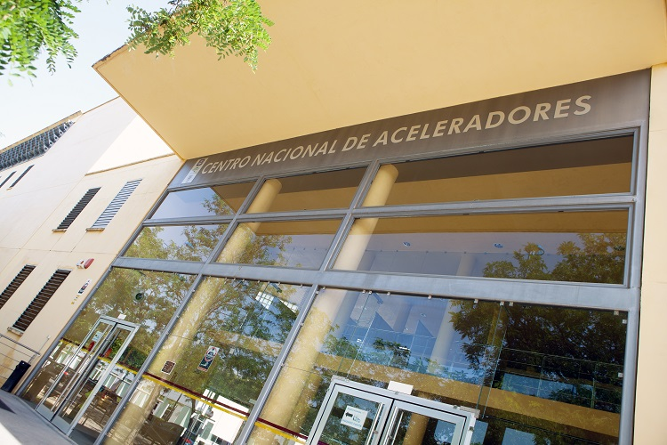

El Centro Nacional de Aceleradores, CNA, es un centro mixto de la Universidad de Sevilla, Junta de Andalucía y CSIC. Se trata de una Instalación Científico-Técnica Singular, ICTS, dedicada a la investigación interdisciplinar y por tanto abierta a usuarios externos.
Para ello se emplean 6 distintas instalaciones: un acelerador Tándem Van de Graaff de 3 MV, un Ciclotrón que proporciona protones de 18 MeV y deuterones de 9 MeV, un acelerador tipo Tándem Cockcroft-Walton de 1 MV, utilizado como espectrómetro de masas, un escáner PET/CT para personas, un nuevo sistema de datación por radiocarbono llamado MiCaDaS, y un Irradiador de 60Co.
La aplicación de estas 6 infraestructuras cubre campos tan variados como ciencias de materiales, impacto medioambiental, física nuclear y de partículas, instrumentación nuclear, tratamiento de imágenes médicas, investigación biomédica e imagen molecular preclínica o datación, diagnóstico por imagen médica en pacientes, datación por Carbono 14 e irradiación en muestras de interés tecnológico y biológico, entre otras
El convenio recientemente firmado entre la Consejería de Transformación Económica, Industria, Conocimiento y Universidades de la Junta de Andalucía, el Consejo Superior de Investigaciones Científicas y la Universidad de Sevilla para actualizar la regulación del Centro Nacional de Aceleradores (CNA) adaptandola a las exigencias del Ordenamiento Jurídico nacional y autonómico lo puede encontrar en el siguiente enlace: ( Covenio del CNA con la Junta de Andalucia, el CSIC y la US ).
El CNA desde el año 2007 se encuentra enmarcado en el mapa de Instalaciones Científico Técnicas Singulares (ICTS). En particular desde el año 2022 forma parte de una ICTS distribuida denominada IABA (Infraestructuras de Aplicaciones Basadas en Aceleradores), de la cual se puede obtenere información adicional entrando en la sección de Solicitudes
")